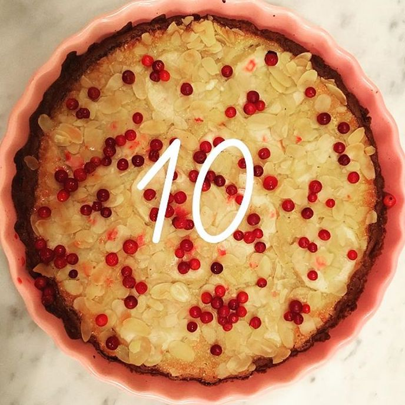

Pepparkakspaj med mandelmassa och äpplen
- 6–8 portioner
- 250 g färdig pepparkaksdeg
- smör till formen
- Fyllning:
- 2 st ägg
- 200 g mandelmassa, riven
- 1 st ekologisk citron, det gula av skalet rivet
- 1 tsk vaniljpulver
- 1 dl creme fraiche
- 2 st röda äpplen
- 1 st liten påse mandelsplitter, 50 g
- 1 msk råsocker
- 1 dl lingon, frysta
- florsocker
- Till servering:
- vaniljglass, lättvispad grädde
Gör så här:
Börja med pajskalet:
Sätt ugnen på 175 grader. Smörj en pajform med låga kanter, ca 25 cm.
Kavla ut degen på mjölat underlag och lägg i formen. Garnera kanterna med överskottsdeg om du önskar.
Förgrädda skalet 8 minuter på nedersta falsen. Låt svalna. Sätt ugnen på 175 grader.
Gör fyllning:
Vispa upp ägg lätt, blanda ner mandelmassa, citronskal, vanilj och crème fraiche. Häll i pajskalet.
Skiva äpplen och lägg ner i ett vackert mönster, strö på mandel och socker. Grädda i ugnens nedre del tills fyllningen har stannat och pajen börjar få färg, det tar cirka 40 minuter. Gräddningstiden kan variera i olika ugnar, så håll koll mot slutet. Om pajen börjar bli för mörk innan fyllningen har stannat lägger du på en bit folie tills den är färdig. Låt svalna.
Garnera med lingon och florsocker, servera med vaniljglass och lättvispad grädde.